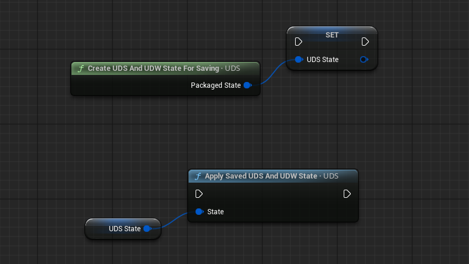

天空的其他功能
配置保存与套用、天空修改器、存档状态、镜头光晕、室内调整与玩家遮挡、云绘制、水位、云光柱、后处理与屏幕控制等十二项功能。
这一页把 UDS 里那些“不属于主线流程、但很实用”的功能集中在一起。它们大多是可选的： 不用不影响基础天空，需要时再回来查。
配置的保存与套用
可以把 UDS（或 UDW）的全部设置存成配置，用于其它关卡/项目复用，或在运行时按游戏事件切换。
入口是 Configuration Manager：工具栏 Ultra Dynamic Sky 下拉菜单，或
Blueprints 文件夹里的编辑器工具。
- 在管理器里选中已有配置并应用到当前 UDS；没有选中任何配置时，用右下角的保存按钮新建。
- 保存时会让你命名并选择位置：项目内（放进项目的 Ultra Dynamic Sky 文件夹，仅本项目可用）或 引擎内容（放进引擎目录下的同名文件夹，同版本引擎的任意项目都能用）。
- 配置缩略图角上的数字是保存时所用的 UDS 版本。旧版本保存的配置仍可使用，但不包含后来新增的变量； 如果在意完整性，用新版本重新保存一次。
运行时套用：UDS 调 Apply Sky Configuration，UDW 调 Apply Weather Configuration。
两者都要套用时，官方建议先套天气配置，再套天空配置。
另一种用法是配置覆盖（Override）：在 UDS/UDW 的 Basic Controls 高级选项里指定一个配置资产，
让 Actor 的设置直接由该资产控制。适合多个关卡里各有一份 UDS、但希望它们共用同一套配置的情况。
注意启用覆盖后，Actor 上的设置就不能再手动改了——它们由配置资产决定。覆盖在启动时生效，运行中仍可正常读写 UDS 变量。
如果经常在同一关卡里来回切换几套配置，可以用 Configuration Buttons 工具把配置做成按钮固定到编辑器面板上。
天空修改器（Sky Modifiers）
修改器是一套“叠加层”机制：用数据资产描述一组要改动的浮点/颜色属性（以及可选的后处理设置）， 在运行时叠加到天空上，可以淡入淡出、多层叠加、随时移除。
修改器资产用 Sky Modifier Editor 制作（工具栏下拉菜单或 Blueprints/Tools）。
在编辑器里：
Modifiable Sky Properties列出该机制能接管的天空属性。改某一项的值即表示本修改器要覆盖它； 取消勾选则移除这项覆盖。Modifier Settings里可以设置淡入淡出的缓动方式、最大 alpha，以及是否附带自己的后处理设置。- 编辑过程中，效果会实时预览在场景里的 UDS 上。
运行时控制的函数：
| 函数 | 作用 |
|---|---|
Add Modifier | 添加修改器（若尚未添加），并在指定秒数内淡入。 |
Remove Modifier | 移除已应用的修改器，并在指定秒数内淡出。 |
Set Modifier State | 直接把 alpha 设为某个值，之后不再自动变化。适合用玩家位置等任意数值驱动。若修改器尚未添加，会自动添加。 |
Clear Modifiers | 立即清除全部已应用的修改器。 |
Set Unmodified Property Values | UDS 启动时会保存一份“未修改”的属性作为插值基准。需要在运行时重新取基准时调用它。 |
如果想按时间段自动生效，用 Sky Modifiers 分类里的 Time of Day Specific Modifiers 映射表：
把修改器加进去，展开条目即可设置淡入区间与淡出区间。淡入可以晚于淡出（用于跨夜的修改器），
但两个区间的结束时间都必须晚于各自的开始时间。
以这种方式自动应用时，不要再用上面的函数去控制它，两者会冲突。
保存天空与天气状态
需要把当前天空（以及天气）状态写进存档、或跨关卡保留时，用两个函数：
| 函数 | 作用 |
|---|---|
Create UDS and UDW State for Saving | 把 UDS 与 UDW 的状态打包成一个结构体，包含时间与当前天气状态的全部变量，可随存档一起保存。 |
Apply Saved UDS and UDW State | 读档或进入新关卡时，把该结构体应用回去。 |

太阳镜头光晕
UDS 自带一套太阳专用的电影感光晕，与引擎后处理里基于图像的光晕（Image Based Lens Flare）是两套完全独立的实现。
在 Lens Flare 分类勾选 Enable Sun Lens Flare，再选择 Lens Flare Type 即可。
想自定义时，在分类的高级选项里找到 Custom Lens Flare Parent Instance，
以 Materials/Material_Instances/Lens_Flares 下的现成实例为父级新建一个实例，
调整纹理、颜色与光晕各元素的映射参数，再把这个实例填入该选项。
室内调整与玩家遮挡
Player Occlusion 是 UDS 里持续检测“相机/角色被场景碰撞遮挡了多少”的系统，
换句话说就是判断玩家现在有多“室内”。它的结果被三处使用：
- UDS 的
Interior Adjustments：按遮挡程度调整部分天空属性； - UDW 的
Sound Occlusion：室内时把天气音效压低、闷住； - UDW 的温度计算：可选地在室内套用另一个温度。
要启用室内调整，先在 Interior Adjustments 分类勾选 Apply Interior Adjustments，
再设置进入室内时各属性如何变化。遮挡值的来源与精度在 Player Occlusion 分类里配置：
每次更新耗时、使用的碰撞射线数量、检测的碰撞通道等。
需要强制某些空间“永远算室内”时，把 Blueprints/Occlusion 下的
UDS Occlusion Volume 放进关卡。Player Occlusion 分类里的
Occlusion Mode 决定遮挡是按碰撞射线判定、按遮挡体积判定，还是两者结合。
屏幕空间光轴
Screen Space Light Shafts 是引擎自带的平行光特性（Light Shaft Bloom）：通过采样已渲染画面的颜色与深度，
用很低的成本做出光束/神光效果。因为它基于屏幕空间，只有朝向光源时才看得到。
这个效果与体积雾无关——体积雾也能做出类似光束，但原理完全不同。
UDS 的 Screen Space Light Shafts 分类就是用来给太阳和月亮这两盏平行光开关该效果的。
绘制体积云覆盖
体积云支持手动“画”出云量分布。画出来的值会叠加在全局 Cloud Coverage 之上
（如果场上有 UDW，则叠加在天气状态给出的云量之上）。
- 确认场景里有 UDS，且 Sky Mode 为体积云。
- 从工具栏
Ultra Dynamic Sky下拉菜单启动Volumetric Cloud Painter（或运行Blueprints里的编辑器工具）。 - 新建或打开一个
UDS Cloud Paint Container——它保存绘制数据，一个关卡里可以有多个。 - 在顶部栏调整笔刷（纹理、强度、衰减、笔刷间距），在视口里左键绘制、右键拖动视图、中键缩放。
- 左侧切换绘制/擦除模式：可画三档云量（视口中以红、绿、蓝表示），也可以擦除（画黑）。
- 完成后点底部的
Save to Textures。画好的格子会存成纹理，放在关卡所在目录的UDS_LevelData子文件夹里。
这些纹理最终被画进 UDS 上的一个云量渲染目标，渲染目标的尺寸、分辨率与用法在
Volumetric Cloud Painting 分类里设置。
关卡里有多个绘制容器、需要切换生效的那一个时，对该 Actor 调用 Activate / Deactivate，
编辑器细节面板里也能切换。
水位（Water Level）
Water Level 分类用来定义关卡水面高度，这个高度会被多个功能复用：
- 日月的焦散折射：UDS 上开启
Render Water Caustics，参数在同分类里。 - 体积雾在水下的消光与反照率：属于全局体积材质的一部分，在
Volumetric Fog分类里配置。 - UDW 的
Use UDS Water Level：把水位应用到天气粒子、声音遮挡等系统。
Global Water Level 是全局的最低水面高度（例如海平面），设成关卡里海面的 Z 高度即可。
地图里有多种水面（海、湖、河）时，用 Water Body Classes 数组：把某个 Actor 类加进去，
关卡里该类的水体就会通过把静态网格渲染到渲染目标的方式，局部影响水位。
用 Water 插件的话通常无需配置——分类里默认已包含该插件的 Lake、Ocean、River 类。
水体在关卡里加载/卸载后需要刷新水位目标时，调用 UDS 的 Update Water Level Target 强制更新。
体积云光柱
阴天时用云绘制器在云层上开一个洞，会看到远处有光束从洞口斜射下来——这就是
Volumetric Cloud Light Rays，默认开启，参数在同名分类里。
它是一套自定义效果：用 Niagara 控制大量加法卡片来渲染光束，与体积雾、屏幕空间光轴都没有关系。
分类里可以调光束卡片的颜色与间距；开启 Individual Cloud Light Rays 后，
即使没有手绘的缺口，只要整体云量很高、云团之间存在缝隙，也会尝试从缝隙里投射光束。
这个选项的卡片数量可能显著增加，性能开销也更高。
后处理
Post Processing 分类里有一个 Post Process Components 数组，每加一条，系统就会创建一个后处理组件。
每条可以覆盖任意后处理设置（泛光、调色、暗角等），并额外提供三类遮罩：
| 遮罩 | 效果 |
|---|---|
| 按时间启用/停用 | 控制该组件的混合权重，随当前时间淡入淡出。 |
| 按云量、雾、尘埃、室内遮挡遮罩 | 例如勾选 Mask Blend Weight When Overcast，天转阴时这组后处理会逐渐消失。 |
| 按下雨/下雪遮罩 | 依赖 UDW；没有 UDW 时不生效。 |
受时间与天气控制的环境声
想让环境声随昼夜或天气改变音量，用 Blueprints/Sound 里的
AmbientSound-Time and Weather Controlled。它是标准 Ambient Sound 的子类，用法完全一致，
只是多了按时间与天气控制音量倍率的逻辑。
在 Sound 分类顶部可以设置白天/夜晚的音量倍率，以及雪天/雨天/无天气各自的倍率；
Volume Multiplier Transition Time 控制倍率变化时的过渡时长。
如果需要更完整的环境声景系统（带声音遮挡、与天气深度联动），应改用 UDW 的 Environment Sound。
屏幕控制控件
项目需要一个简单的屏上界面让玩家调时间和天气时，UDS 自带控件 UDS Onscreen Controls，
在控件设计器面板的 Ultra Dynamic Sky Widgets 分类里。
- 默认所有控件都启用，可以在细节面板里关掉不需要的部分。例如只留
Show Time Control，就是一个紧凑的时间滑块。 - 可以设置显示的时间/日期格式，以及天气控件里可选的天气预设。
- 多人游戏里，如果客户端要用它控制服务器上的 UDS/UDW，在玩家控制器里加上
UDS Client Controller组件即可，控件会自动通过它把时间/天气操作同步到服务器。